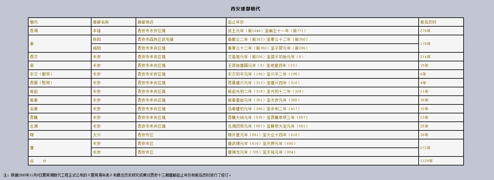

西安古称长安，位于中国内陆腹地黄河流域中部关中盆地，是中华民族和东方文明的发源地之一。早在100万年前，蓝田古人类就在这里建造了聚落；7000年前的仰韶文化时期，这里已经出现了城垣雏形。西安有3100多年的建城史和1100多年的国都史，先后有西周、秦、西汉、东汉、新、西晋（愍帝）、前赵、前秦、后秦、西魏、北周、隋、唐13个王朝在此建都，又为赤眉、绿林、大齐（黄巢）、大顺（李自成）等农民起义政权都城。自西汉起，西安就成为中国与世界各国进行经济、文化交流和友好往来的重要城市。“丝绸之路”就是以长安为起点，西至古罗马。西安是闻名世界的历史名城，与罗马、雅典、开罗齐名，也是中国六大古都中建都历史最长的一个，长安文化代表着中华文化的主干。“西安”之名称，始于明代。元至元九年（1272），元世祖封三子忙哥剌（la，音“腊”）为安西王，镇守这里，改京兆府为安西路。元皇庆元年（1312），改安西路为奉元路。明洪武二年（1369），改奉元路为西安府，府城简称西安，名称一直沿用至今。

历史上，西安也是地方行政机关——州、郡、府、路、省和长安、咸宁两县的治所。1911年辛亥革命爆发后，西安是全国最早响应的省会城市之一。20世纪20年代，随着西安现代工商业的发展和城市人口的增加，诞生并逐步形成了不同于历史上任何行政建制的新型地方行政建制，即市级建制。民国十六年（1927）11月25日，陕西省政府议决设立西安市。民国十九年（1930）11月8日，陕西省政府撤销西安市建制，辖区复归长安县。民国二十一年（1932）3月5日，国民党确定长安为陪都，定名西京，并成立西京筹备委员会，但西京市政府始终未成立，后西京筹备委员会撤销。民国三十三年（1944）9月1日，西安市政府正式成立，为陕西省辖市。民国三十六年（1947）8月1日，西安市升格为国民政府行政院直辖市，为全国12个院辖市之一。
民国二十五年（1936）12月12日，这里发生了震惊中外的“西安事变”。事变之后，设在西安的国民革命军第八路军驻陕办事处，为延安革命根据地输送了大批青年知识分子和军需物资。党和国家领导人周恩来、邓小平、叶剑英等都曾在此领导过革命斗争。1949年5月20日西安解放。之后，西安是中央西北局和西北行政委员会所在地，中央人民政府的直辖市；1954年6月改为省辖市；1984年10月被国务院列为计划单列市；1992年被批准为内陆开放城市；1994年被批准为全国综合配套改革试点城市和副省级城市。
西安以强大的科技实力、门类齐全的工业体系和日益成熟的城市服务体系成为中国重要的科研、高等教育、国防科技工业和高新技术产业基地及辐射北方中西部地区的金融、科技、教育、旅游、商贸中心。